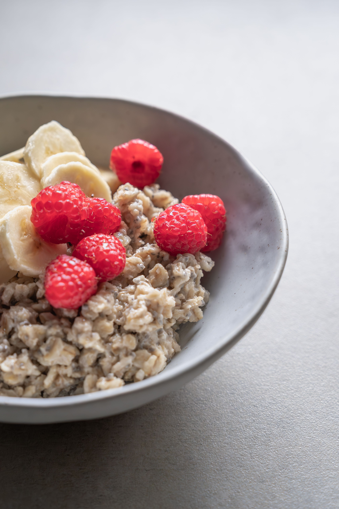
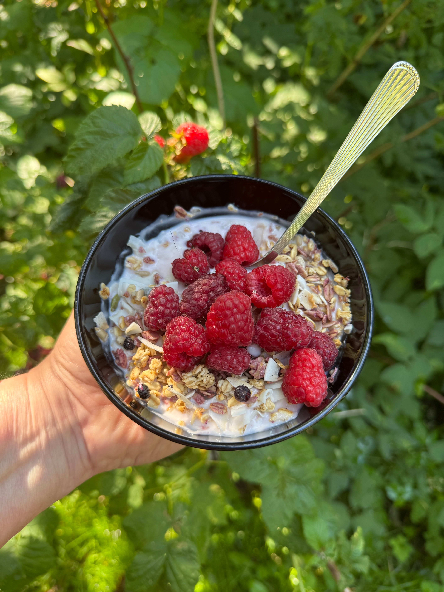
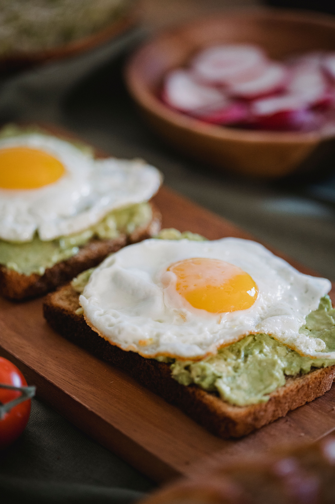

Havregrynsgröt med banan

En god och nyttig frukost med havregryn och banan.
Yoghurt med bär

Yoghurt med färska bär. En enkel och god frukost.
Smörgås med ägg

En smörgås med ägg som passar bra till frukost.
Frukost och mellanmål
En bra start på dagen börjar med en god och hälsosam frukost!
Enkla frukostidéer
1. Havregrynsgröt med banan
Du behöver havregryn, mjölk eller vatten och en banan.
Koka havregryn med mjölk eller vatten. Skär bananen i bitar och lägg på gröten.
2. Yoghurt med bär
Du behöver naturell yoghurt, bär och lite müsli.
Lägg yoghurten i en skål. Tillsätt bär och müsli.
3. Smörgås med ägg
Du behöver fullkornsbröd, ett ägg och lite grönsaker.
Koka ägget och lägg det på brödet. Lägg till gurka eller tomat.